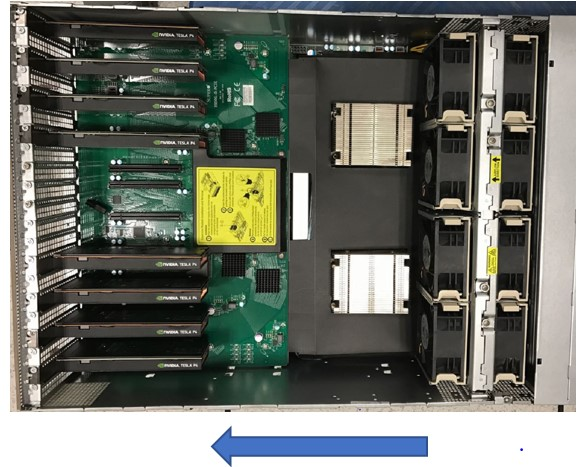
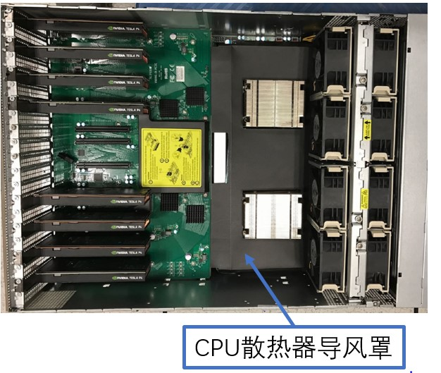
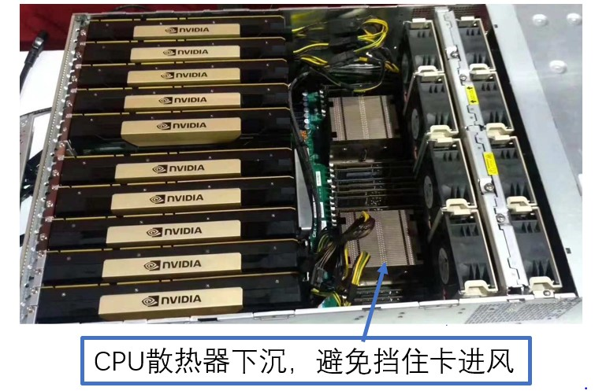
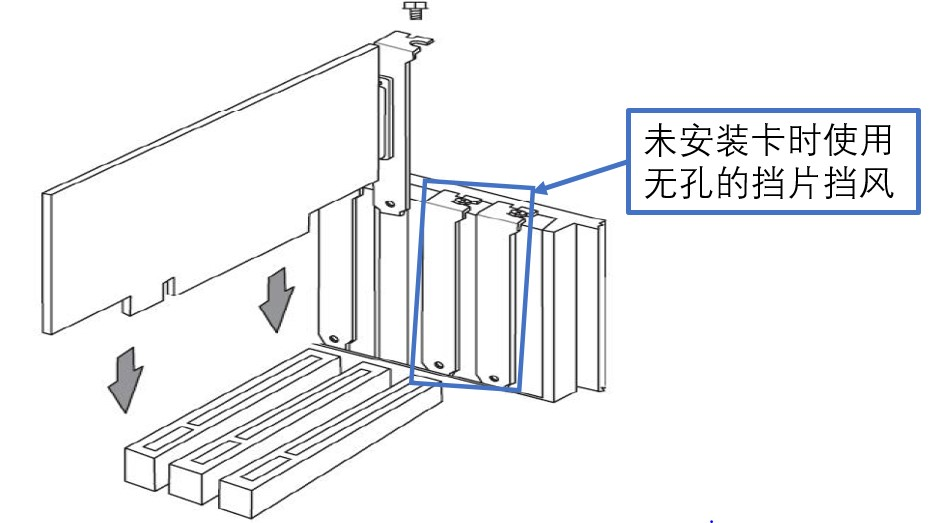

3.4. 智算卡常见问题¶
3.4.1. SC5+在主机运行过热的情况¶
答：SC5+主机选择，请注意主机散热环境，SC5+散热角度服务器选型建议:
SC5+被动卡进风口温度与需求风量对应表
表 3.5 SC5+被动卡进风口温度与需求风量¶ 卡进风口平均温度（℃）
30℃以下
35℃
40℃
45℃
50℃
55℃
最低Airflow（cfm）
3.5
4.3
5.3
6.7
8.6
10.5
备注
表中对应温度下的风量为需求的最小风量要求，具体风量是否满足需系统厂商实测确定
卡进风口温度在25度以下时，只要智能卡接通电源，无论是idle或满载状态下，系统都需要提供与30度环境一样的最小风量
建议选择搭配高风量及风压（或风扇并联）的服务器，便于智能卡散热
1U机型的风扇建议选用：4056风扇或两个4028风扇并联
2U机型的风扇建议选用：8056风扇或两个8038风扇并联
4U机型的风扇建议选用：2组8056风扇(或两个8038并联)
风道设计
建议最好选用前进后出的风道设计
导风罩设计：建议智能卡上做专用导风罩设计，与CPU导风罩分离；如下图所示，CPU散热器为一个导风罩，智能卡需单独设计导风罩，导风罩设计以最便于散热为目的
选用服务器时卡进风口最好不要有高发热原机器件，如下图，CPU为高发热器件，其散热器需要选择高度矮一些的，避免挡住卡进风口

系统出风口设计
确保任何空的扩展槽上均安装一个挡片,一个未装挡片的开放扩展槽会降低系统散热效果，由此可能引起过热而影响系统性能或导致部件损害

3.4.2. SC5安装¶
3.4.2.1. SC5快速安装指南¶
在主机关机状态下将SC5安装至PCIe插槽，需要插到位，SC5从PCIe接口直接供电，不需要外接ATX 2x3电源。注意，服务器最好是拔掉220V电源再安装，某些服务器，在220V输入时，PCIe插槽有漏电。
安装完后，先不要盖好后盖，power on上电，从上侧观察LED状态，如下图所示，4个灯的状态，蓝蓝绿红，为SC5上电正常。
进入系统，输入命令lspci｜grep 1684，正常识别的话，会看到1684设备，如下图所示。
lspci | grep 1684 06:00.0 Processing accelerators: Device 1e30:1684 (rev 01) 06:00.1 Processing accelerators: Device 1e30:1684 (rev 01) 06:00.2 Processing accelerators: Device 1e30:1684 (rev 01)
如没有1684设备，请再次确认LED状态是否正常；
如LED 异常，关机，断电，断开220V，重新上电，再次观察LED 状态，如正常，请操作步骤4
如LED正常，lspci命令下，仍无法识别设备，请收集硬件信息，和OS版本，反馈给我们。
3.4.2.2. PCIe模式驱动安装的步骤与注意事项？¶
答：安装驱动成功的前提是主机需要能够扫描到我们的板卡，通过lspci可以查看，我们一个三芯卡SC5+有3 个function，一个SC5H有一个function。 lspci能显示我们的设备是安装驱动的必要条件，如果主机发现不了设备，则驱动安装会异常。
3.4.2.3. 内核更新与驱动重装¶
答：内核版本升级会导致重启后不能自动加载驱动： 例如当前内核版本是: uname -r 4.15.0-142-generic 我们安装完驱动后，驱动放在下面目录: /lib/modules/4.15.0-142-generic/kernel/drivers/pci/bmsophon.ko 如果内核版本升级到了4.15.0-150-generic，则系统启动时会去/lib/modules/4.15.0-150-generic/kernel/drivers/pci/ 目录下去找bmsophon.ko，会失败， 解决方法是重新装驱动，所以我们建议禁止内核自动升级。
3.4.2.4. 编译驱动过程报gcc/make/linux header找不到的错误？¶
答：build-essential、linux-headers-generic这些在插有板卡的host机器上要先安装好，否则会报gcc/make/linux header找不到的错误。
centos：可以通过 yum install kernel-header 安装，如果uname -r 的版本与默认安装不一致，可以https://pkgs.org/ 搜索kernel-header下载。
Ubuntu/debian： 可以通过 apt-get update; apt-get install linux-headers-$(uname -r) 安装，如果找不到,可以https://pkgs.org/ 搜索linux-headers下载。
3.4.2.5. 驱动安装的其他注意事项？¶
答：
CentOS某些发行版，例如centos7.4已经不再维护，没有Linux header，导致编译失败，建议安装centos7.9 ；
某些内核版本导致我们的驱动编译不过，需要我们改驱动源码。这种情况下，安装驱动过程中会有失败log，请将log发给我们分析；
板卡温度过热，或者板卡和卡槽接触不良导致安装失败，会有kernel 错误log；这种情况下，请把kernel log(dmesg命令显示的log)发给我们分析；
板卡个体故障原因导致安装失败，建议更换板卡 ；这种情况下，请把kernel log(dmesg命令显示的log)发给我们分析；
lspci必须能发现我们的设备，才能出现设备节点，如果没有出现设备节点，请用上面命令检查系统是否有扫描到PCIE设备。
3.4.3. PCIe卡无法被识别？¶
该问题很可能跟散热问题相关，因散热不满足要求芯片温度过高而造成：
看一下是PC还是标准服务器，如果是PC，通常风道和风量不能符合三芯卡的被动散热要求，建议加装额外的风扇进行散热，或者采用主动散热卡；
标准服务器，先看一下插卡的槽位是否是标准的X16槽位，X8槽位的功率支持通常最大只有45W，不建议使用；
看一下服务器的风扇是否直对PCIE卡的进风口，中间有否物理阻挡；
将服务器的上盖盖好，如果开盖，风扇的风会散逸，导致散热效果差；
看一下服务器的所有PCIE槽位都加装了挡片，没有加装挡片的需要加装挡片；
通过BIOS调整服务器的风扇转速到最大档位；
建议将服务器放置于有空调的房间或者标准机房环境进行测试；
针对三芯卡的散热，如果必须使用散热条件不足的工控机、PC、非GPU型服务器等，建议由主机厂商增加导风罩为加速卡设立专用风道，便于卡片散热；
风扇1）为12V供电，2pin风扇，最大电流0.36A，不可调速；风扇2）和3）为12V供电，4pin风扇，最大电流0.68A，可调速；安装方式：风扇需要安装到卡的入风口处，风扇出风口与卡进风口的距离建议最好不要超过3mm，如果条件许可的话，建议风扇出风口与卡进风口的地方密封，防止漏风。
3.4.3.1. 在X86服务器主机上安装驱动及卸载驱动的方法:¶
3.4.4. PCIe模式如何查看VPU内存分配情况？¶
答：PCIe VPU内存使用情况：
bm-smi --opmode=display_memory_detail
3.4.5. 如何判断机器上是否有SOPHON设备¶
答：
卡插入卡槽后， lspci | grep ‘168’ ，正常识别的话，会看到设备
类似这样的 06:00.0 Processing accelerators: Sophgo Technologies Inc. BM1684X, Sophon Series Deep Learning Accelerator (rev 01)
卡被识别，驱动安装成功后，系统会有sophon模块
lsmod | grep bm 会输出：类似 bmsophon 2752512 0
卡被识别，驱动安装成功后，会有/dev/bmdev-ctl /dev/bm-sophon0节点
/dev/bmdev-ctl /dev/bm-sophon0节点
卡被识别，驱动安装成功后，获取设备数量：
命令行：
cat /proc/bmsophon/card_num cat /proc/bmsophon/chip_num
程序接口，参考《 bmlib详细接口介绍 》：
bm_dev_getcount(int *count)